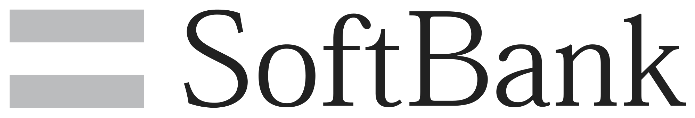

- Bridgewater Associatess
- Softbank corps
- Amazon.coms
Softbank corps는 어떤 기업인가?
Softbank
SoftBank Group Corp. (ソフトバンクグループ株式会社 Sofutobanku Gurūpu Kabushiki-gaisha)[4] is a Japanese multinational holding conglomerate headquartered in Tokyo, Japan. The company wholly owns Softbank Corp., Softbank Vision Fund (in Japanese), Arm Holdings, Fortress Investment Group, Boston Dynamics, and also owns stakes in Sprint (ca.85%), Alibaba (29.5%), Yahoo Japan (48.17%), Bright Star (87.1%), Uber (15%), Didi Chuxing (ca.20%), Ola (ca.30%), Grab, Renren (42.9%), InMobi (45%), Hike (25.8%), Snapdeal (ca.30%), Brain, Fanatics (ca.22%), Guardant Health, Improbable Worlds (ca.50%), Mapbox, Nauto, Nvidia (ca.5%), One97 Communications (ca.20%), Oravel Stays (42%), OSIsoft, PingAn Heath Cloud (7.41%), Plenty United, Roviant Sciences, Slack Technologies (ca.5%), Vir Biotechnology, WeWork (ca.22%), Zhongan Online P&C Insurance (5%), Compass (ca.22%), Auto1 (ca.20%), Wag (45%), Katerra (ca.28%), Cruise Automation (ca.19.6%), Ele.me, Getaround, Packet.[5] It runs the world's largest technology fund, Vision Fund.
The company is known for its leadership by founder Masayoshi Son.[7] It now owns operations in broadband; fixed-line telecommunications; e-commerce; internet; technology services; finance; media and marketing; semiconductor design; and other businesses.
SoftBank was ranked in the Forbes Global 2000 list as the 38th largest public company in the world,[8] and the 4th largest publicly traded company in Japan after Toyota, MUFG, NTT.[citation needed]
